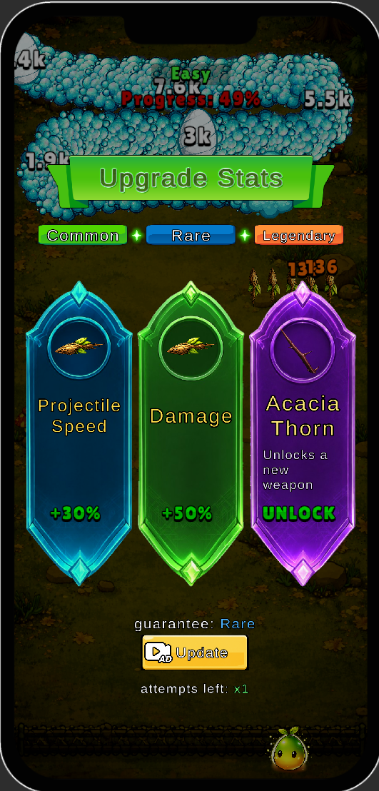
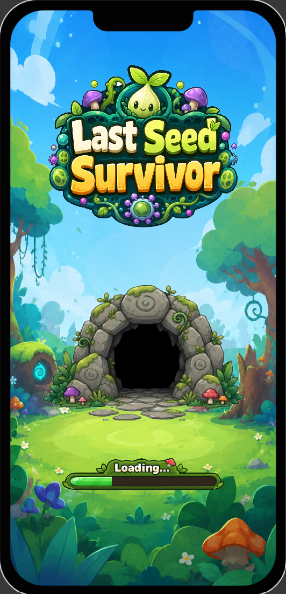

One explicit frame pipeline
GameplayUpdateDriver is the Unity Update boundary. GameplayFrameCoordinator captures one immutable input snapshot, then runs named player, weapon, worm, pressure, and difficulty stages in a visible order.
Architecture & gameplay systems · Unity 6 · Mobile
An architecture-first mobile auto-shooter built around explicit dependency and frame boundaries, engine-free domain state, failure-safe runtime ownership, deterministic balance rules, and Unity integration validated as a complete project.




Dependency map
Seven production and tooling assemblies separate engine-free contracts and domain state from gameplay, infrastructure, presentation, bootstrap, and Editor code. Zenject installers describe ownership boundaries without runtime service location.
Key engineering decisions
GameplayUpdateDriver is the Unity Update boundary. GameplayFrameCoordinator captures one immutable input snapshot, then runs named player, weapon, worm, pressure, and difficulty stages in a visible order.
WormSpawnLifecycle validates and executes named construction stages. If a later stage fails, completed stages roll back in reverse order and rented segments return to their owning pools.
Generation, policy, commit, application, and presentation are separate. Partial application is never blindly retried, batch failures preserve their order, and ad-backed state changes only after a granted result.
ObjectPool<T> rejects foreign and duplicate returns. Projectile, worm-segment, and damage-popup adapters own type-specific initialization, reset, prewarming, and scene cleanup.
Runtime weapon state and pure stat calculators remain independent of UI. IWeaponPowerSource lets adaptive worm HP consume aggregate power without branching on concrete weapon types.
RewardedAdOperation owns readiness, cancellation, SDK exception isolation, operation ownership, and late-callback invalidation. Disabled and immediate implementations keep core bootstrap independent from an optional SDK.
Automated validation
The current master baseline passes the project build, 299 EditMode tests, 29 PlayMode tests, configuration validation, serialized-reference validation, and Zenject validation for all three enabled build scenes.
EditMode tests cover pooling ownership, weapons, rewards, rail sampling, worm state, popup ownership, scene routes, configuration, and required references.
PlayMode tests construct the Bootstrap, Lobby, and Game scenes with real dependencies and exercise navigation, restart, revive, rewards, rollback, cleanup, and performance markers.
One Editor command validates 3 enabled scenes, 12 configuration assets, 106 required serialized View fields, and 12 prefabs, then restores the developer’s original scene setup.
Shared balance tooling
Worm Balance Lab runs deterministic sessions against production reward effects, runtime weapon state, power estimators, HP rules, progression limits, rerolls, ads, and revive policies.
Seeds, section count, path timing, hit efficiency, reward strategy, weapon setup, rerolls, ad use, and revive behavior are explicit inputs.
The default matrix evaluates four scenarios across 4,000 simulated sessions and reports completion, failure, progress, damage, reward history, DPS, ads, rerolls, and revives.
Gameplay and Editor tooling share calculators and state, reducing drift while keeping device playtesting and profiling as separate release gates.
Mobile runtime
Input is physically polled once per frame, runtime identity lookups use dictionaries where ownership mapping matters, and hot gameplay code avoids LINQ, repeated scene search, and repeated component lookup.
Projectile families, worm segments, and damage popups are pooled; worm prewarming can yield in configured batches instead of creating every segment in one frame.
Profiler markers cover the complete gameplay frame, main-weapon fire, and worm simulation, with PlayMode baselines for invocation, Editor GC allocation, pool stability, and retained scene objects.
The runtime selects 60, 90, or 120 FPS conservatively from refresh rate and device tier. Android release-build, thermal, memory, and frame-time profiling remain explicit hardware gates.
Current scope
The public repository exposes first-party gameplay code, architecture documentation, and a review map. Current work covers portrait mobile combat, two weapon families, segmented-enemy simulation, rewards, rerolls, guarded revive, restart, navigation, UI lifecycle, and balance tooling.
Engine-free domain state, Zenject composition roots, SignalBus, explicit frame order, transactional rollback, pooled ownership, deterministic tests, scene validation, and profiler baselines
Unity 6000.3.5f2, C#, URP, Input System, Physics2D, Zenject, SignalBus, UniTask, DOTween, UGUI, NUnit, Unity Test Framework, Android
Architecture & delivery case
Review a compact playable project with Zenject composition, Assembly Definition boundaries, SignalBus lifecycle, custom fixed-step physics, and guarded UniTask navigation.
Open Asteroids case →